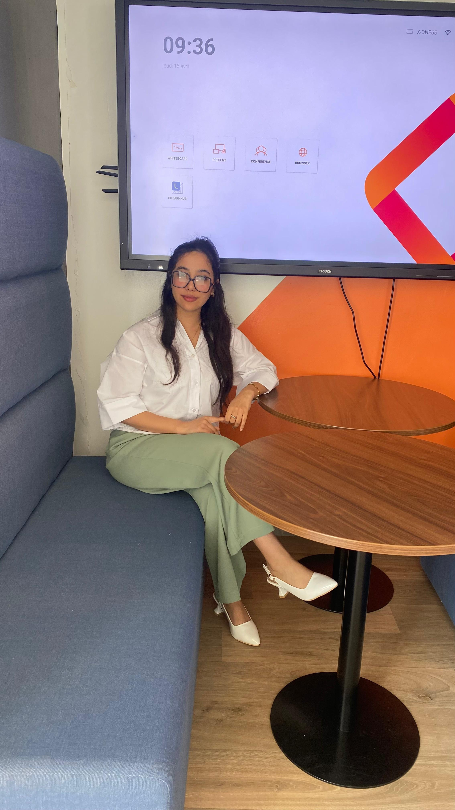

I'm Rajae El Mondiry, a Full-Stack Web Developer and graduate of the Class d'Excellence at CMC Béni Mellal–Khénifra. I build responsive, user-centered web applications using React.js, Laravel, and MySQL. My experience includes developing a complete timetable management system and contributing to a Sustainable Urban Mobility project with INNOV Engineering Consulting. I'm currently seeking a Full-Stack Developer work or internship where I can contribute, grow, and build meaningful digital products.
I'm a Full-Stack Web Developer with a strong interest in building practical digital solutions that solve real-world problems. My journey into software development started with curiosity and quickly became a passion for creating modern, responsive, and user-focused web applications.
I was selected to join the Class d'Excellence at CMC Béni Mellal–Khénifra, where I completed an intensive Full-Stack Web Development diploma focused on real projects, Agile collaboration, and industry best practices rather than tutorial-based learning.
During my training, I designed and developed a complete Timetable Management System using React.js, Laravel, and MySQL, taking the project from requirements analysis and database design to deployment while collaborating with a development team using Git and Agile methodologies.
Beyond software development, I gained field experience with INNOV Engineering Consulting, contributing to the Sustainable Urban Mobility Plan for Béni Mellal. This experience strengthened my communication, analytical thinking, and requirements-gathering skills—qualities that I now apply when designing digital products.
I'm currently looking for a Full-Stack Developer Internship where I can contribute, continue learning, and build high-quality web applications with modern technologies.
The problem: CMC Béni Mellal–Khénifra managed class and instructor schedules manually — slow to update and prone to conflicts.
What I built: A responsive web app for creating, editing, and assigning schedules with conflict checks — React.js front end, PHP/Laravel + MySQL back end, full CRUD and secured data handling.
Result: Delivered a working system that turned a manual process into a centralized digital tool, from spec to deployment as part of an Agile team.
The problem: Social platforms need component architecture that stays maintainable as feeds and interactions grow.
What I built: Component-based UI in React.js with structured state management and API integration for dynamic content.
Result: Reusable, maintainable components that kept the interface consistent as features were added.
The problem: Smallholder farmers often lack accessible digital tools to track productivity sustainably.
What I built: A concept for a digital platform to help farmers monitor and improve agricultural productivity — connecting my interest in sustainability with product thinking.
The problem: Developers and students often need quick conversion tools without switching between multiple websites.
What I built: A modern JavaScript application that combines a Color Converter and a Decimal-to-Binary Converter with real-time calculations, input validation, random generators, copy-to-clipboard functionality, and responsive UI.
Result: Built an interactive utility tool demonstrating JavaScript DOM manipulation, event handling, algorithms, and responsive interface design.
The problem: Calculating an exact age in years, months, and days manually is time-consuming and error-prone.
What I built: A lightweight web application that accurately calculates a user's age from their birth date with instant results, responsive design, and clean user experience.
Result: Demonstrated date manipulation, JavaScript calculations, form validation, and modern responsive UI development.
Intensive full-stack program covering front-end, back-end, databases, and Agile project delivery.
Meta
Meta
AQJ & Bidaya
Training Certificate
University of Leeds
I'm currently looking for full-stack developer works and internships and entry-level roles. If you have an opportunity — or just want to talk about a project — I'd love to hear from you.